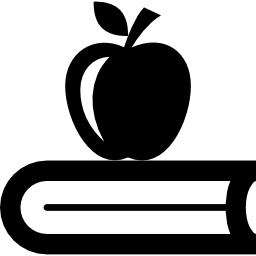
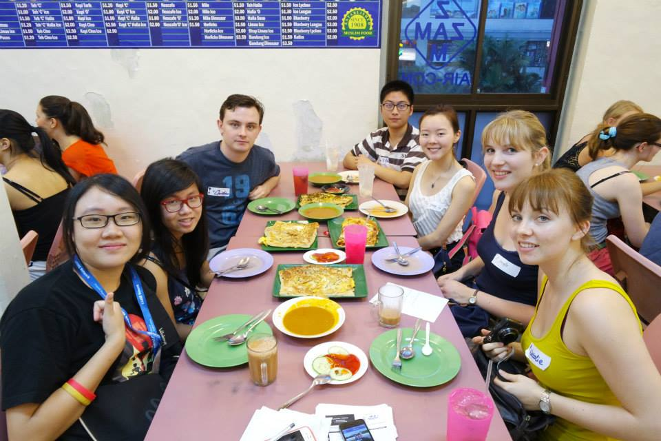
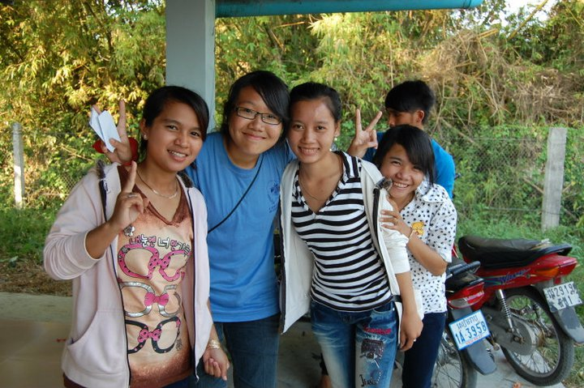
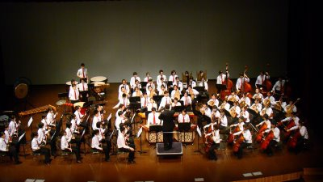
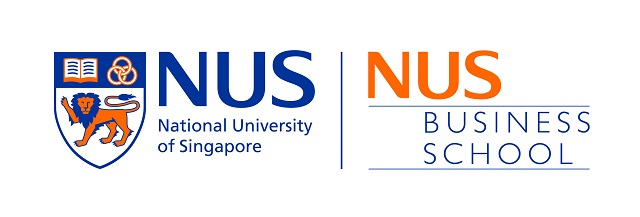
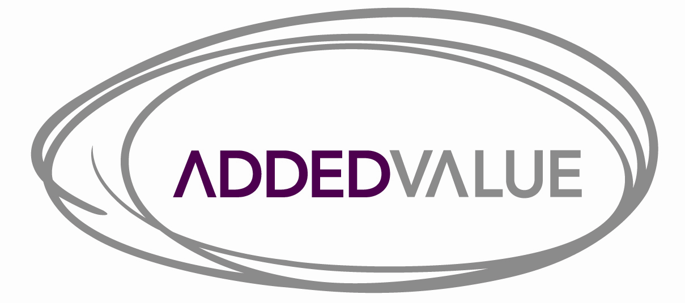

Education
-
National University of Singapore, Bachelor of Computing (Honours) in Computer Science
(2014 - Present) - Current CAP of 4.0
- Actively learning programming and Computer Science concepts from modules in programming methodology & theory
-
Ngee Ann Polytechnic, Diploma in International Business
(2010 - 2013) - Graduated with a cumulative GPA of 3.72
- Completed a 6-month overseas internship with A+ grade in Oracle Added Value Shanghai, China, from September 2012 to February 2013
- Awarded Directors' List in 2011/2012
- Achieved distinctions in Electronic Business Applications, IT in Business and International Trade & Practices
- Attained 'A's in Enterprise Creation & Development, International Human Resource Management, International Purchasing, Overseas Immersion Experience, Cross Cultural Perspective, International Business Environment, Service Operations Management, Principles of Accounting and Decision Support with Spreadsheets
-
Chua Chu Kang Secondary School, GCE 'O' levels
(2006 - 2009) - Graduated with 6 disctinctions and an aggregate of 8 points (L1R5)
- Distinctions in Additional Mathematics, Elementary Mathematics, Pure Physics, Pure Chemistry, Combined Humanities (Geography and Social Studies), Chinese Language
- Awarded Edusave Scholarship Award every year from 2006 to 2009 for being in the top 5% of the entire cohort
- Selected for a 20-student immersion trip to Xiamen, China, in 2008


Co-Curricular Activities (CCAs)
-

i.CARE, National University of Singapore
(2014 - Present) - Led groups of exchange students on local tours to share about local cultures and learn about other cultures
- Communicated effectively with exchange students from diverse countries and backgrounds
-

Boys Brigade Primers, Ngee Ann Polytechnic
(2010 - 2013) - Planned for and executed a 3 Days 2 Night Primers Orientation Camp 2012 for 100 freshmen and another 3 Days 2 Night Community Service Clubs Camp 2011 for 80 selected student leaders in various Community Service Clubs in Ngee Ann Polytechnic
- Actively publicised and garnered food and monetary donations for beneficiaries through Boys Brigade Share A Gift in 2010 and 2011
- Embarked on an Overseas Service Learning Trip to Cambodia in 2010 to serve the community through leadership
-

Chinese Orchestra, Chua Chu Kang Secondary School
(2006 - 2008) - Served as a member of the executive committee in 2008/2009
- Designed the progam brochure for an audience of more than 100 for Chinese Orchestra Night in 2008
- Selected to represent the school to compete nation-wide in the biennial Singapore Youth Festival Competition in 2007 & 2009 and received a Silver award for both years
Employment History
-
Administrative & IT Support, NUS Business School Career Services
(2014) - Supported the office on daily administrative tasks and provided resourceful IT support when colleagues face problems with their computers in their day-to-day work
-
Cookware Promoter, Le Creuset Singapore
(2013) - Learnt important selling points of the product range within 2 weeks and was able to independently manage a counter despite having no prior cookware or promoting background
- Worked co-operatively with staff and management of multiple major department stores as I was heavily rotated among various outlets
-
Research Project Executive, Oracle Added Value [Shanghai Office]
(2012 - 2013) - Worked supportively with Chinese colleagues in a foreign environment on various quantitative research projects for clients such as Coca Cola China and Clarks
- Honed time management skills and sensitivity to details because of the nature of quantitative projects
- Extensively involved in translation of documents from Chinese to English and vice-versa
-
Baker & Cashier, Fancy Delight
(2010 - 2012) - Heavily involved in the daily operations of the shop as I had to juggle 2 roles when needed
- Devised a way to effectively clean the baking cups in a fast and clean manner and was appointed to advise other colleagues on the method used

